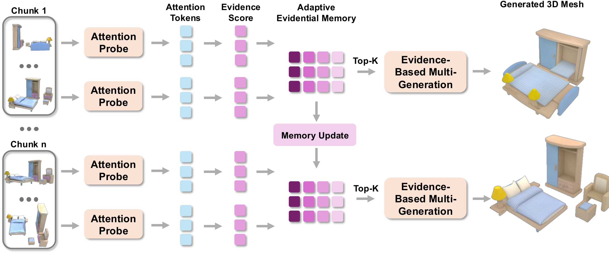
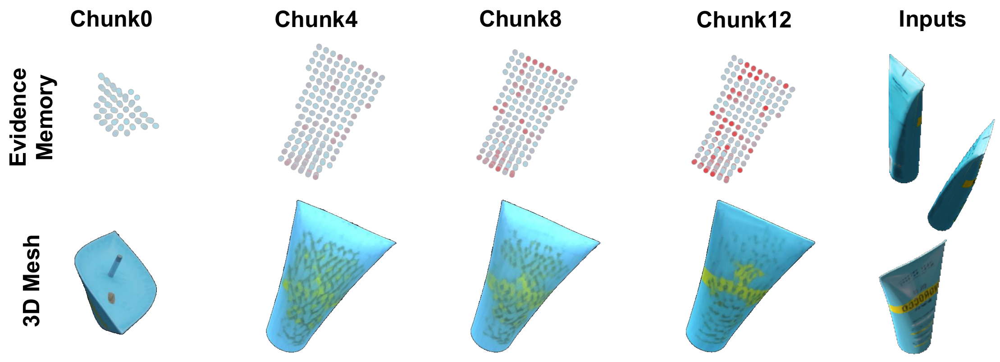
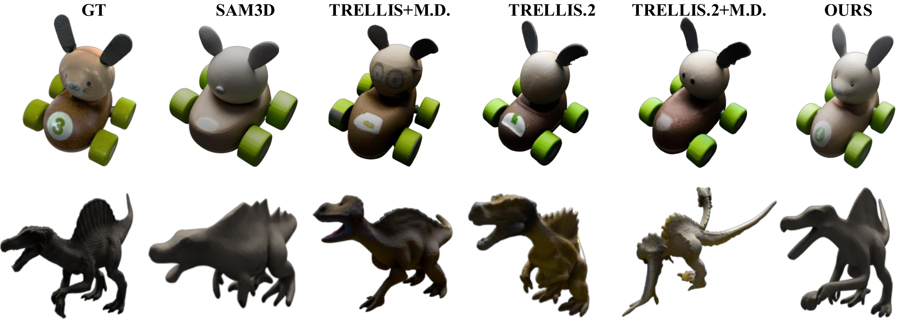
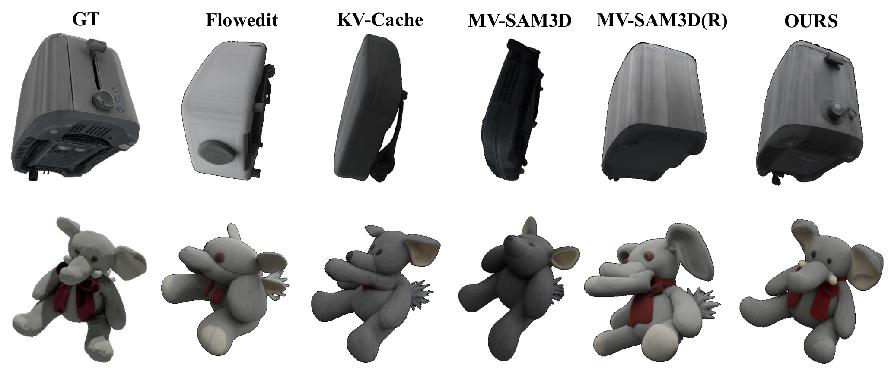
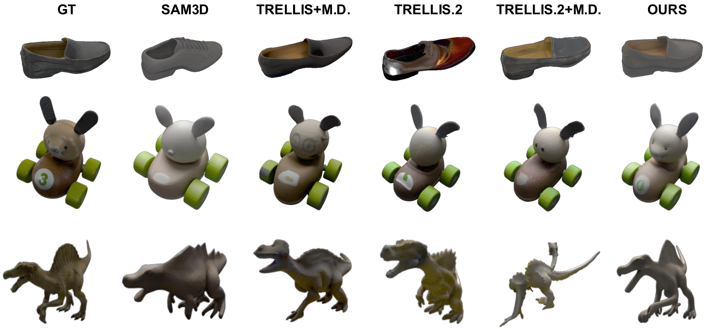

View-conditioned 3D generators such as SAM 3D, TRELLIS, and Hunyuan3D produce high-quality object reconstructions from a single view, but real-world visual observation often arrives as long monocular streams. Naively applying these generators to each streaming frame independently leads to severe temporal inconsistency in the generated results.
To address this problem, we propose Streaming3D, the first training-free streaming mechanism that turns a frozen view-conditioned 3D generator into a streaming generator with constant cross-chunk memory. Streaming3D maintains a compact evidential memory that selectively caches the most informative historical frames based on a proposed evidence score mechanism. As the stream progresses, the memory dynamically updates to retain a fixed number of informative frames, preventing the memory footprint from growing linearly with sequence length. This also prevents degradation over long sequences and keeps the underlying generator completely unchanged — without retraining, architectural modifications, or auxiliary losses.
Evaluated on both realistic and synthetic streaming benchmarks, Streaming3D outperforms latent-transport baselines including KV-cache reuse and flow-based feature editing, across both photometric and geometric metrics. It maintains a constant memory footprint and stable reconstruction quality as sequence length increases.

Our key observation is that a frozen view-conditioned generator already exposes conditioning evidence through its cross-attention maps. During a cheap one-step warmup pass, if a query token in a 3D volume attends to a frame both strongly and selectively, that frame provides confident evidence for the corresponding part of the 3D volume. We treat this as an evidence score for the view with respect to the query token.
z0 measures the per-token
significance of each incoming view, combining attention magnitude
with selectivity (1 − normalized entropy). The
frozen prior makes scores comparable across chunks.
M, F ∈ ℝQ×D persistently
track each query token's top-D evidence scores and the
corresponding global frame indices. Frames that never enter any
token's list are discarded immediately. The total footprint is
2 × Q × D scalars — about 50 KB for
SAM 3D (Q=4096, D=4),
independent of stream length.

Two structural properties distinguish this from any latent-transport scheme. First, the cross-chunk memory footprint does not scale with stream length. Second, evidence accumulation is monotonic: for each query token, the retained evidence score can only remain unchanged or improve as new frames arrive. The conditioning bundle supplied to the generator is therefore never worse, in evidence-score terms, than the bundle at the previous chunk. KV banks, prev-chunk query banks, and FlowEdit-style velocity edits admit no analogous non-degradation guarantee.
We evaluate Streaming3D on long-stream 3D generation using the GSO and NAVI datasets, which together stress object-scale streaming with repeated structures, large viewpoint changes, partial observations, and accumulated occlusions. Experiments run on a single NVIDIA H100 GPU with SAM 3D as the underlying generation backbone. Camera poses and depth for the initial input are estimated by Depth Anything 3. We set K=8 and D=1 by default for efficiency, and evaluate streams of length 100.
| Aspect | Metrics |
|---|---|
| Appearance | PSNR ↑, SSIM ↑, LPIPS ↓, Image FID ↓ on held-out novel views |
| Geometry | PFID ↓, Chamfer Distance ↓, IoU ↑ |
Streaming3D achieves the strongest overall performance on both appearance and geometry metrics. The gains are consistent across all metrics, indicating that improvement is not limited to image-level rendering quality but also reflects better 3D structure.
| Data | Method | Appearance | Geometry | |||||
|---|---|---|---|---|---|---|---|---|
| PSNR ↑ | SSIM ↑ | LPIPS ↓ | Image FID ↓ | PFID ↓ | CD ↓ | IoU ↑ | ||
| GSO | TRELLIS.2 | 10.563 | 0.822 | 0.210 | 202.808 | 170.726 | 0.156 | 0.480 |
| TRELLIS+M.D. | 10.680 | 0.850 | 0.192 | 245.361 | 122.780 | 0.138 | 0.500 | |
| TRELLIS.2+M.D. | 10.611 | 0.838 | 0.194 | 228.937 | 176.253 | 0.150 | 0.493 | |
| SAM3D | 14.178 | 0.848 | 0.178 | 105.197 | 71.263 | 0.094 | 0.664 | |
| Streaming3D (Ours) | 15.791 | 0.864 | 0.145 | 76.001 | 50.472 | 0.074 | 0.753 | |
| NAVI | TRELLIS.2 | 15.492 | 0.874 | 0.128 | 142.487 | 76.446 | 0.152 | 0.682 |
| TRELLIS+M.D. | 14.513 | 0.861 | 0.135 | 140.148 | 69.098 | 0.160 | 0.703 | |
| TRELLIS.2+M.D. | 15.672 | 0.877 | 0.126 | 144.276 | 86.128 | 0.160 | 0.684 | |
| SAM3D | 16.159 | 0.876 | 0.132 | 141.496 | 71.737 | 0.138 | 0.721 | |
| Streaming3D (Ours) | 16.474 | 0.879 | 0.123 | 134.025 | 62.743 | 0.128 | 0.741 | |
Bold rows mark the best result in each dataset block. Streaming3D consistently improves appearance and geometry over single-view and multi-view generation baselines.

We compare Streaming3D with several streaming alternatives, including MV-SAM3D-style fixed-view selection and cache- / transport-based streaming such as KV-cache reuse and FlowEdit. Random view sampling is unstable; KV-caches accumulate stale evidence under long camera motion; FlowEdit operates on fixed-size chunks and loses long-range history. In contrast, Streaming3D maintains a compact persistent token-level evidence memory.
| Data | Method | Appearance | Geometry | |||||
|---|---|---|---|---|---|---|---|---|
| PSNR ↑ | SSIM ↑ | LPIPS ↓ | Image FID ↓ | PFID ↓ | CD ↓ | IoU ↑ | ||
| GSO | MV-SAM3D, K random views | 14.828 | 0.859 | 0.156 | 83.039 | 68.534 | 0.064 | 0.676 |
| SAM3D + FlowEdit | 14.343 | 0.850 | 0.178 | 98.643 | 76.445 | 0.090 | 0.668 | |
| SAM3D + KV-Cache | 14.482 | 0.852 | 0.171 | 83.353 | 67.292 | 0.084 | 0.682 | |
| MV-SAM3D + Last Chunk | 13.906 | 0.848 | 0.184 | 104.228 | 86.044 | 0.113 | 0.630 | |
| Streaming3D (Ours, K=8) | 15.791 | 0.864 | 0.145 | 76.001 | 50.472 | 0.074 | 0.753 | |

Increasing K generally provides more visual evidence, but the gains are not strictly monotonic. We use K=8 as the default, balancing reconstruction quality and streaming cost; K=16 gives the strongest overall appearance, while K=12 yields the best geometric alignment.
| Data | Method | Appearance | Geometry | |||||
|---|---|---|---|---|---|---|---|---|
| PSNR ↑ | SSIM ↑ | LPIPS ↓ | Image FID ↓ | PFID ↓ | CD ↓ | IoU ↑ | ||
| GSO | K = 4 | 15.724 | 0.861 | 0.148 | 77.544 | 47.516 | 0.064 | 0.754 |
| K = 8 (default) | 15.791 | 0.864 | 0.145 | 76.001 | 50.472 | 0.074 | 0.753 | |
| K = 12 | 15.663 | 0.860 | 0.150 | 75.547 | 44.682 | 0.060 | 0.754 | |
| K = 16 | 15.912 | 0.864 | 0.144 | 71.449 | 45.251 | 0.064 | 0.764 | |

@misc{anonymous2026streaming3d,
title = {{Streaming3D}: Sequential 3D Generation via Evidential Memory},
author = {Anonymous Authors},
year = {2026},
note = {Anonymous submission, under review}
}